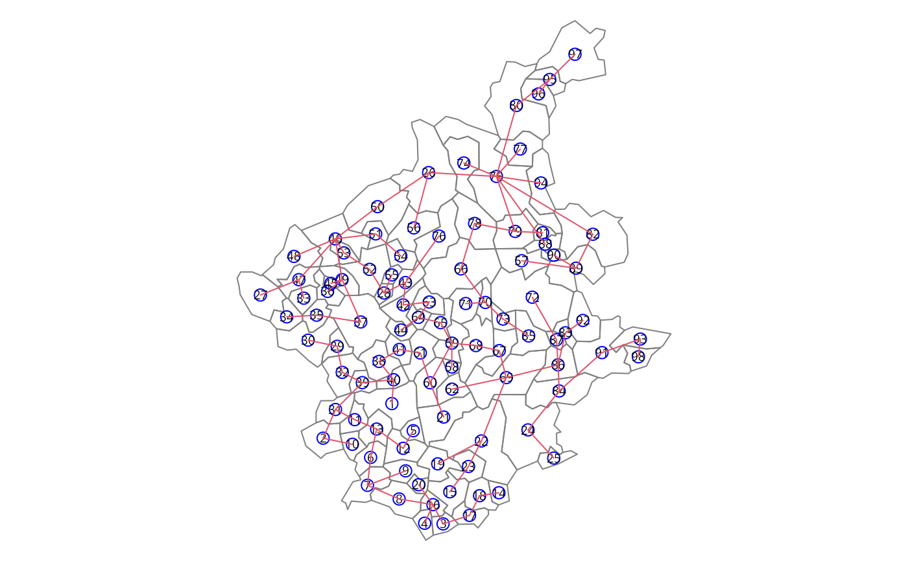
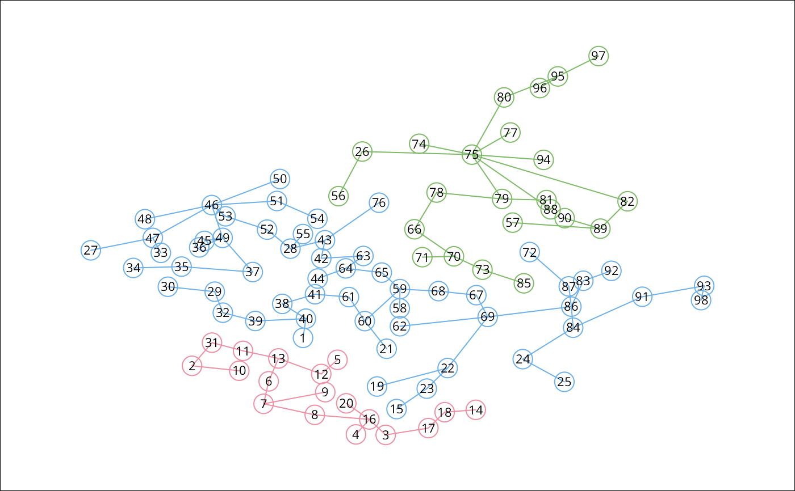

skater.RdThis function implements a SKATER procedure for spatial clustering analysis. This procedure essentialy begins with an edges set, a data set and a number of cuts. The output is an object of 'skater' class and is valid for input again.
skater(edges, data, ncuts, crit, vec.crit, method = c("euclidean",
"maximum", "manhattan", "canberra", "binary", "minkowski",
"mahalanobis"), p = 2, cov, inverted = FALSE)A matrix with 2 colums with each row is an edge
A data.frame with data observed over nodes.
The number of cuts
A scalar ow two dimensional vector with with criteria for groups. Examples: limits of group size or limits of population size. If scalar, is the minimum criteria for groups.
A vector for evaluating criteria.
Character or function to declare distance method.
If method is character, method must be "mahalanobis" or
"euclidean", "maximum", "manhattan", "canberra", "binary"
or "minkowisk".
If method is one of "euclidean", "maximum",
"manhattan", "canberra", "binary" or "minkowski", see
dist for details,
because this function as used to compute the distance.
If method="mahalanobis", the mahalanobis distance
is computed between neighbour areas.
If method is a function, this function is
used to compute the distance.
The power of the Minkowski distance.
The covariance matrix used to compute the mahalanobis distance.
logical. If 'TRUE', 'cov' is supposed to contain the inverse of the covariance matrix.
A object of skater class with:
A vector with length equal the number of nodes. Each position identifies the group of node
A list of length equal the number of groups with each element is a set of edges
A vector identifying the groups with are not candidates to partition.
A vector identifying the groups with are candidates to partition.
The total dissimilarity in each step of edge removal.
Assuncao, R.M., Lage J.P., and Reis, E.A. (2002). Analise de conglomerados espaciais via arvore geradora minima. Revista Brasileira de Estatistica, 62, 1-23.
Assuncao, R. M, Neves, M. C., Camara, G. and Freitas, C. da C. (2006). Efficient regionalization techniques for socio-economic geographical units using minimum spanning trees. International Journal of Geographical Information Science Vol. 20, No. 7, August 2006, 797-811
See Also as mstree
### loading data
bh <- st_read(system.file("etc/shapes/bhicv.shp",
package="spdep")[1], quiet=TRUE)
st_crs(bh) <- "+proj=longlat +ellps=WGS84"
### data standardized
dpad <- data.frame(scale(as.data.frame(bh)[,5:8]))
### neighboorhod list
bh.nb <- poly2nb(bh)
### calculating costs
lcosts <- nbcosts(bh.nb, dpad)
### making listw
nb.w <- nb2listw(bh.nb, lcosts, style="B")
### find a minimum spanning tree
mst.bh <- mstree(nb.w,5)
### the mstree plot
par(mar=c(0,0,0,0))
plot(st_geometry(bh), border=gray(.5))
plot(mst.bh, coordinates(as(bh, "Spatial")), col=2,
cex.lab=.6, cex.circles=0.035, fg="blue", add=TRUE)

### three groups with no restriction
res1 <- skater(mst.bh[,1:2], dpad, 2)
#> Error in if (w$num_obs < 1) { stop("The weights is not valid.")}: argument is of length zero
### groups size
table(res1$groups)
#> Error in table(res1$groups): object 'res1' not found
### the skater plot
opar <- par(mar=c(0,0,0,0))
plot(res1, coordinates(as(bh, "Spatial")), cex.circles=0.035, cex.lab=.7)
#> Error in h(simpleError(msg, call)): error in evaluating the argument 'x' in selecting a method for function 'plot': object 'res1' not found
### the skater plot, using other colors
plot(res1, coordinates(as(bh, "Spatial")), cex.circles=0.035, cex.lab=.7,
groups.colors=heat.colors(length(res1$ed)))
#> Error in h(simpleError(msg, call)): error in evaluating the argument 'x' in selecting a method for function 'plot': object 'res1' not found
### the Spatial Polygons plot
plot(st_geometry(bh), col=heat.colors(length(res1$edg))[res1$groups])
#> Error in heat.colors(length(res1$edg)): object 'res1' not found

par(opar)
### EXPERT OPTIONS
### more one partition
res1b <- skater(res1, dpad, 1)
#> Error in if (w$num_obs < 1) { stop("The weights is not valid.")}: argument is of length zero
### length groups frequency
table(res1$groups)
#> Error in table(res1$groups): object 'res1' not found
table(res1b$groups)
#> Error in table(res1b$groups): object 'res1b' not found
### thee groups with minimum population
res2 <- skater(mst.bh[,1:2], dpad, 2, 200000, bh$Pop)
#> Error in if (w$num_obs < 1) { stop("The weights is not valid.")}: argument is of length zero
table(res2$groups)
#> Error in table(res2$groups): object 'res2' not found
### thee groups with minimun number of areas
res3 <- skater(mst.bh[,1:2], dpad, 2, 3, rep(1,nrow(bh)))
#> Error in if (w$num_obs < 1) { stop("The weights is not valid.")}: argument is of length zero
table(res3$groups)
#> Error in table(res3$groups): object 'res3' not found
### thee groups with minimun and maximun number of areas
res4 <- skater(mst.bh[,1:2], dpad, 2, c(20,50), rep(1,nrow(bh)))
#> Error in if (w$num_obs < 1) { stop("The weights is not valid.")}: argument is of length zero
table(res4$groups)
#> Error in table(res4$groups): object 'res4' not found
### if I want to get groups with 20 to 40 elements
res5 <- skater(mst.bh[,1:2], dpad, 2,
c(20,40), rep(1,nrow(bh))) ## DON'T MAKE DIVISIONS
#> Error in if (w$num_obs < 1) { stop("The weights is not valid.")}: argument is of length zero
table(res5$groups)
#> Error in table(res5$groups): object 'res5' not found
### In this MST don't have groups with this restrictions
### In this case, first I do one division
### with the minimun criteria
res5a <- skater(mst.bh[,1:2], dpad, 1, 20, rep(1,nrow(bh)))
#> Error in if (w$num_obs < 1) { stop("The weights is not valid.")}: argument is of length zero
table(res5a$groups)
#> Error in table(res5a$groups): object 'res5a' not found
### and do more one division with the full criteria
res5b <- skater(res5a, dpad, 1, c(20, 40), rep(1,nrow(bh)))
#> Error in if (w$num_obs < 1) { stop("The weights is not valid.")}: argument is of length zero
table(res5b$groups)
#> Error in table(res5b$groups): object 'res5b' not found
### and do more one division with the full criteria
res5c <- skater(res5b, dpad, 1, c(20, 40), rep(1,nrow(bh)))
#> Error in if (w$num_obs < 1) { stop("The weights is not valid.")}: argument is of length zero
table(res5c$groups)
#> Error in table(res5c$groups): object 'res5c' not found
### It don't have another divison with this criteria
res5d <- skater(res5c, dpad, 1, c(20, 40), rep(1,nrow(bh)))
#> Error in if (w$num_obs < 1) { stop("The weights is not valid.")}: argument is of length zero
table(res5d$groups)
#> Error in table(res5d$groups): object 'res5d' not found
if (FALSE) {
data(boston, package="spData")
bh.nb <- boston.soi
dpad <- data.frame(scale(boston.c[,c(7:10)]))
### calculating costs
system.time(lcosts <- nbcosts(bh.nb, dpad))
### making listw
nb.w <- nb2listw(bh.nb, lcosts, style="B")
### find a minimum spanning tree
mst.bh <- mstree(nb.w,5)
### three groups with no restriction
system.time(res1 <- skater(mst.bh[,1:2], dpad, 2))
library(parallel)
nc <- detectCores(logical=FALSE)
# set nc to 1L here
if (nc > 1L) nc <- 1L
coresOpt <- get.coresOption()
invisible(set.coresOption(nc))
if(!get.mcOption()) {
# no-op, "snow" parallel calculation not available
cl <- makeCluster(get.coresOption())
set.ClusterOption(cl)
}
### calculating costs
system.time(plcosts <- nbcosts(bh.nb, dpad))
all.equal(lcosts, plcosts, check.attributes=FALSE)
### making listw
pnb.w <- nb2listw(bh.nb, plcosts, style="B")
### find a minimum spanning tree
pmst.bh <- mstree(pnb.w,5)
### three groups with no restriction
system.time(pres1 <- skater(pmst.bh[,1:2], dpad, 2))
if(!get.mcOption()) {
set.ClusterOption(NULL)
stopCluster(cl)
}
all.equal(res1, pres1, check.attributes=FALSE)
invisible(set.coresOption(coresOpt))
}